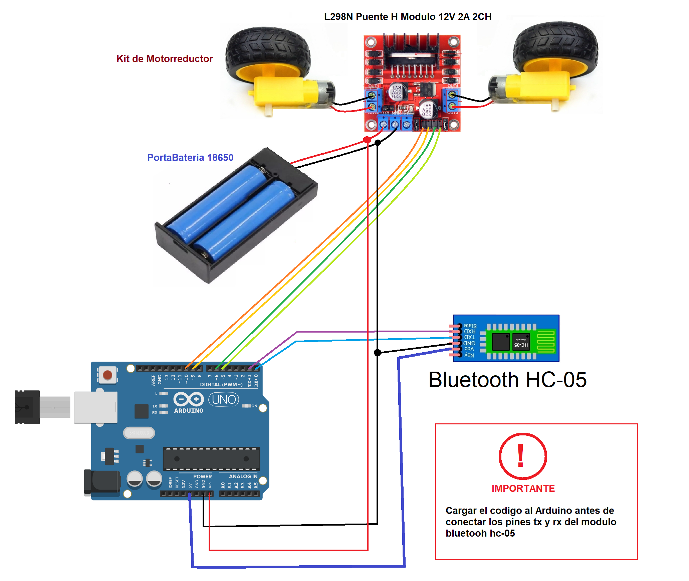

IN1,IN2 → Arduino digital pins (e.g., 8,9) for motor A
EN A → Arduino PWM pin (e.g., 10)
IN3,IN4 → Arduino digital pins (e.g., 4,5) for motor B
EN B → Arduino PWM pin (e.g., 11)
OUT pins → Motor terminals
Wiring diagram (example)

Important: always connect grounds together (battery negative, Arduino GND, L298N GND).
If L298N has an onboard 5V regulator and you want to power Arduino from motor supply, follow module documentation and caution.